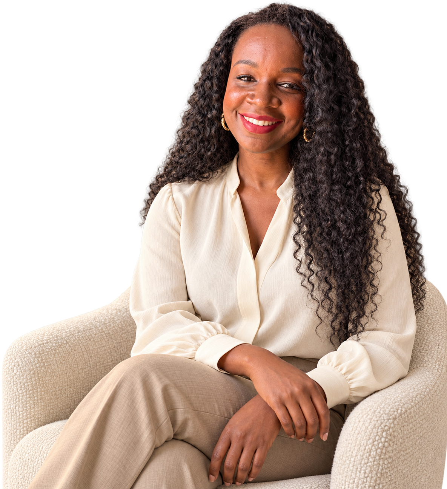
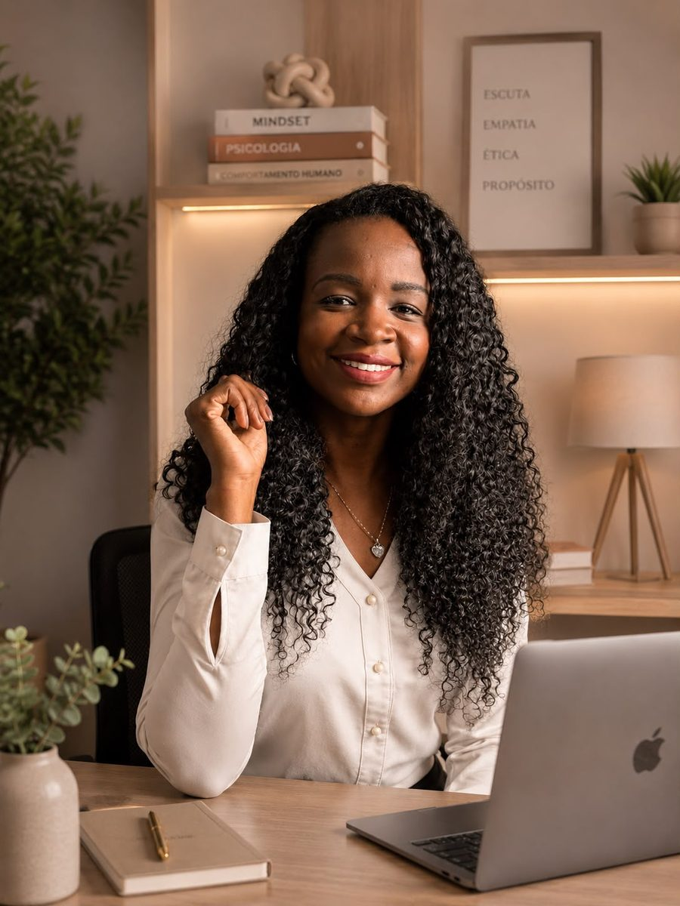

01
Clareza
“O que eu quero comunicar?”
Entender quem você é profissionalmente, reconhecer seus diferenciais, definir seus objetivos e a percepção que deseja construir.
Meu trabalho é ajudar profissionais a construir uma presença mais autêntica, estratégica e coerente, a partir da própria identidade, dos seus diferenciais e da maneira como desejam se posicionar profissionalmente.


Muita gente competente vive essa distância entre o que entrega e o que as pessoas percebem. Ela tem nome, e tem caminho.
Anos de estudo e prática que, no digital, parecem do mesmo tamanho de quem acabou de começar.
Você cresceu profissionalmente, mas a forma como se apresenta ficou para trás.
E quando tenta explicar o que faz, a resposta sai parecida com a de todo mundo.
Não por falta de assunto, e sim por não saber o que faz sentido comunicar.
Você testa o que funciona para outros e sai com a sensação de estar se comparando o tempo todo.
Quem chega até você ainda não enxerga tudo o que existe por trás do seu trabalho.
Nada disso significa que falta algo em você. Normalmente, falta clareza sobre o que você já tem.
Frequência, Reels, tendências e algoritmo têm seu lugar. Mas nenhum deles responde as perguntas que vêm antes: quem você é, qual é o valor do seu trabalho, como deseja ser percebido e para quem deseja comunicar.
Conteúdo é expressão. Quando a base está clara, postar deixa de ser um esforço de adivinhação e passa a ser consequência.
O conteúdo é a última camada, e não a primeira.
Uma Marca Pessoal com direção e método, sem perder a dimensão humana de quem está por trás dela.
É desse encontro que nasce a forma como estruturo o meu trabalho.
Três movimentos em sequência. Cada um prepara o próximo: sem clareza não há coerência, e sem coerência a conexão não se sustenta.
“O que eu quero comunicar?”
Entender quem você é profissionalmente, reconhecer seus diferenciais, definir seus objetivos e a percepção que deseja construir.
“O quanto isso é verdadeiro e coerente comigo?”
Alinhar identidade e discurso, o que você pensa, fala e apresenta, para que sua presença represente de fato quem você é.
“Como isso chega e ressoa no outro?”
Olhar para como a mensagem é recebida: identificação, interesse, confiança e a construção de relacionamento com o público certo.

Uma imersão estratégica em duas sessões para construir uma presença digital mais clara, coerente e sustentável.
A partir do Método 3C (Clareza, Coerência e Conexão), conduzo um processo personalizado de Marca Pessoal, posicionamento e comunicação, com escuta, método e olhar psicológico.
O foco está na leitura da identidade e dos bloqueios que podem interferir na forma como você se mostra no digital.
Não se trata de psicoterapia.
Online · via Zoom
Cerca de 30 minutos, gratuita e sem compromisso, para entender seu momento e ver se a Consultoria faz sentido.
90 minutos, gravada. Presença atual, trajetória, objetivos, dores e diferenciais.
90 minutos, gravada. Posicionamento, dificuldades de comunicação e bloqueios estratégicos.
PDF de 10 a 12 páginas, com diagnóstico, pilares de conteúdo, bio, CTAs e plano de ação de 90 dias.
Para dúvidas pontuais e pequenos ajustes enquanto você aplica o plano.
Cerca de 1 hora para revisar o que foi aplicado, observar avanços e ajustar a rota.
Profundidade, personalização e método, aplicados à sua história profissional.
Conhecer a Consultoria DespertarSua presença no digital não começa no que você posta. Começa no quanto você se conhece.
Um encontro para profissionais de diferentes áreas que utilizam as redes sociais como ferramenta de trabalho e querem compreender melhor seu posicionamento, sua comunicação e a forma como se apresentam no digital. Tudo isso a partir do autoconhecimento e do Método 3C.
Uma oportunidade de conhecer, na prática, um pouco do meu olhar e da forma como conduzo esse trabalho.
Para ir fundo no seu caso
O Método 3C aplicado à sua trajetória, com diagnóstico, direção e um plano de ação para os próximos 90 dias.
Para começar a olhar diferente
Um primeiro contato com o método, para você passar a enxergar a própria presença a partir dessa perspectiva.
Sou psicóloga com abordagem em Gestalt-terapia, formada pela UniFTC, mentora e criadora do Método 3C. Antes da Psicologia, construí minha trajetória na Engenharia Química e também como instrutora de cursos técnicos — experiências que trouxeram uma base lógica, metodológica e estratégica para o meu trabalho.
Ao unir essas duas trajetórias, passei a olhar para a presença profissional não apenas pela comunicação, mas também pela identidade, pelo comportamento e pelas relações.
Foi observando profissionais competentes lidando com comparação, ansiedade para postar e a pressão de construir uma presença que nem sempre representa quem realmente são que comecei a desenvolver uma forma diferente de trabalhar a Marca Pessoal.
Construir presença a partir de quem cada profissional é, unindo clareza, método, escuta e consistência, sem fórmulas prontas e sem a pressão de simplesmente aparecer mais.
Comportamento humano, identidade, relações e escuta.
Estrutura, método, pensamento lógico e análise.
Para quem deseja aprofundar o processo ao longo do tempo, com acompanhamento mais próximo na construção da Marca Pessoal e da presença digital.
Levo meu olhar sobre Marca Pessoal, posicionamento e presença digital para palestras, encontros e eventos. A proposta e os temas são construídos de acordo com o público e o contexto de cada evento.
“A experiência foi bastante enriquecedora! A proposta do despertar no digital, nos convida para refletirmos sobre a necessidade de cuidado, respeito e atenção com nosso eu real e não o ideal, que nos leva para um lugar de adoecimento psíquico, tendenciando pelo excesso de comparação (um dos pontos negativos) oferecido pelas redes sociais, de maneira fortalecida: o Instagram.
A possibilidade de trocas entre os participantes, também promovem o engajamento/interação para tornar o aprendizado mais leve. Super indico!
Parabéns, pelo trabalho!
Minha colega Psi!”
“Falar de Marcela e da mentoria Despertar no Digital é muito fácil, pois já conheço ela desde o tempo da faculdade e do início do Instagram dela. Comprometida no que faz, não poderia deixar de participar da sua primeira mentoria Despertar no digital. Com muito profissionalismo e acolhimento ministrou suas aulas com linguajar acessível, desmistificando o que para alguns seria complicado e praticamente pegando na mão dos seus mentorados e os orientando a romper barreiras e alcançar seus objetivos. Super recomendo!”
“A mentoria com Marcela me ajudou muito a entender como postar no Instagram de forma mais estratégica e leve. Aprendi dicas práticas que já fizeram diferença no meu conteúdo e na minha confiança para aparecer nas redes. Recomendo muito!”
Para profissionais liberais que desejam construir uma presença profissional mais clara, coerente e conectada com quem são, com estratégia aplicada à própria trajetória.
É uma imersão individual e personalizada, realizada em 2 sessões, com aplicação do Método 3C — Clareza, Coerência e Conexão — e direcionamento estratégico para os próximos 90 dias.
Não. A Consultoria Despertar é destinada a profissionais liberais, independentemente de gênero.
A Consultoria é individual, personalizada e aprofunda a realidade específica do profissional. A Masterclass é uma experiência coletiva e introdutória para conhecer o Método 3C e começar a olhar para a própria presença profissional de outra forma.
Não. O trabalho parte da sua identidade, trajetória e objetivos profissionais. A presença digital é construída a partir disso — e não apenas do que você publica.
É um encontro online e ao vivo, pelo Zoom, com cerca de 2 horas de duração. A experiência inclui conteúdo, exercício guiado e espaço para perguntas e respostas.
Sim. A Masterclass Presença no Digital é gratuita.
Escolha a experiência que mais faz sentido para o seu momento e acesse o botão correspondente na página para conhecer os próximos passos.
Não. O Método 3C trabalha Clareza, Coerência e Conexão na construção da presença profissional. As redes sociais são apenas uma das formas de comunicar essa presença.
Sim. A consultoria é realizada online, permitindo que profissionais de diferentes localidades participem do processo.
Uma presença mais consistente começa quando identidade, valor,
posicionamento e comunicação passam a dizer a mesma coisa.